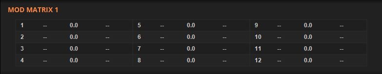

The Modulation Matrix¶
The modulation matrix is the main focus of Deducktion’s modulation system and is located in the lower panel pages accessed by the MOD1 and MOD2 links:
The matrix presents 24 ‘slots’ in which modulations can be defined. A modulation consists of a source, a target and a modulation amount. Each slot contains a source selection menu on the left, a target selection menu on the right and a central parameter display for controlling the modulation amount.
A modulation source provides a value to be applied to a modulation target. Examples include envelopes, LFOs and note velocity. Modulation sources can produce modulation values from -100 to + 100 though in most cases they are limited to a subset of this covering a total range of no more than 100. For example LFOs provide output from -50 to +50, and envelopes from 0 to +100.
Modulation sources are either bipolar, where the values generated vary from positive to negative about 0, or unipolar where the value changes between 0 and a positive of negative limit. LFOs are by default bipolar but can be made unipolar using an offset of +/- 100. Envelopes are an example of a unipolar source.
Modulation targets represent synthesizer parameters to be controlled by modulation sources. They receive modulation inputs in the range -100 to +100 though in most cases the practical range will be less than this. For example volume targets do not recognize negative values and accept input from 0 to +100 only.
For each of the available modulation slots the output of each assigned source is sent to the assigned target. The actual modulation value applied to the target is determined by the modulation amount.
The modulation amount is a multiplier between -100 and +100 and represents the percentage of the modulation source applied to the target. By default the amount is 0 so no modulation is applied. Setting an amount of +100 causes all of the source value to be applied to the target. Similarly -100 applies all of the source to the target but with the opposite polarity. This is relevant for envelopes and LFOs where the output can be inverted.
Modulation targets may be modulated by multiple sources; the actual value applied to the target will be the sum of all the sources (limited to a maximum of +100 and a minimum of -100.)
The modulation applied to the target will be in addition to the value already assigned to the parameter via the control panel.
Modulation Sources¶
The following modulation sources are available:
LFO - the output of the LFOs. By default this is in the range -50 to +50. This allows the LFO output to be applied symmetrical to a source such as pitch. Use the LFO offset value to shift the range up or down to address unipolar targets such as volume which range form 0 to +100.
Envelope - the output of the ADSR envelopes in the range 0 to +100.
Velocity - the velocity provided by the current note in the range 0 to +100.
Mod CC - the value provided from a controller via the MIDI CC value assigned to the corresponding Mod CC setting accessible via the Play page.
Constant - a constant value of +100. This allows any fixed modulation value to be applied to a target using the modulation amount control and the value applied will be the same as the amount. Applying a fixed negative amount to a target can shift the output a unipolar modulator, for example an envelope, into negative values turning it into a bipolar modulator.
Random - a random number generated for each new note in the range 0 to +100.
Pitch Bend - the current potion of the pitch bend controller in the range -100 to +100. Note pitch bend is always applied to the pitch of notes played according to the setting in the control section. If the pitch bend modulation source is applied to note pitch it is in addition to that applied directly from the MIDI controller.
Mod Wheel - the current position of the mod wheel in the range 0 to +100.
Channel Pressure - the ‘aftertouch’ pressure value in the range 0 to +100. Thsi affects all the notes currently being played.
Key Pressure - the ‘aftertouch’ pressure value in the range 0 to +100. This affects only the notes where aftertouch is being applied.
Modulation Targets¶
The following modulation targets are available:
Osc Tune - the oscillator pitch in semitones. For each unit change in the source value the pitch will change by a semitone. The pitch can be changed continuously over its modulation range.
Osc Semi - the oscillator pitch in semitones. This is the same as Osc Tune except it can be changed only in semitone intervals.
Osc Fine - the oscillator pitch in cents. For each unit change in the source value the pitch will change by a cent.
Osc PW - the pulse width setting.
Osc Sub - the sub oscillator level. Note this is a bipolar control so positive and negative modulation amounts will play either of the two waveforms available via the sub oscillator.
Osc Pan - the oscillator pan position.
Osc Vol - the oscillator volume.
Osc X Vol - the oscillator cross-fade amount (see below).
Filter Cut - the filter cutoff frequency.
Filter Res - the filter resonance level.
LFO Rate - the LFO rate.
Mod Amount - the modulation amount for each of the 24 modulation slots.
The Mod Amount target allows the modulation amount of a given slot to be controlled by a second modulation source in another slot. For example, if slot 1 contains an LFO to filter cutoff assignment, a second slot can be used to assign the mod wheel to mod amount 1. In this way the mod wheel can control the amount of modulation applied to the filter. In this case set the LFO modulation amount to +100 and use the mod amount in slot 2 to control the maximum modulation level.
The Osc X Vol modulation target allows a modulation source to cross-fade the volumes of both oscillators. To see how it works try the following demonstration:
initialise the current preset.
set the oscillators to square and noise outputs and both volumes to 0.
set LFO 1 to a sine or triangle waveform, +100 offset and 75.0 phase.
in the mod matrix assign LFO 1 to Osc X Vol and set the modulation level to +100.
Play a note. The volume should cross fade between the two oscillators. Use the modulation level to determine the oscillator volume.